Getting Started with AI for Visual Artists
Your experience is the foundation.
AI is the new tool that extends it.
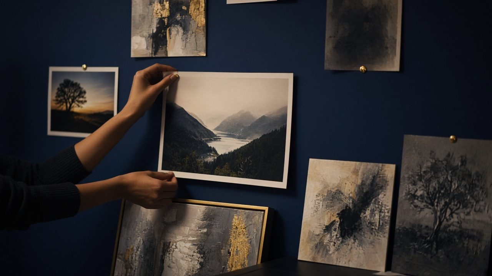
Getting Started with AI for Visual Artists
Photographers, videographers, and designers have always worked with tools that change. New cameras, new software, new delivery platforms. Each one expanded what was possible without erasing the eye, the timing, the taste, or the years of practice that make the work distinct.
AI belongs in that same category. It does not create visual art. It does not replace the ability to see light, build a frame, read a room, or decide what matters. Those remain human. What AI can do is accelerate the parts of the process that sit around the craft — ideation, client communication, variation testing, and administrative load — so more of your time and energy stay on the work only you can do.
This short guide is written for artists who want practical, low-risk ways to try the tools while keeping full control of the outcome.
You direct. AI assists.
Your visual signature, your standards, and your final decisions stay with you. The value of your experience is exactly what makes the tools useful.
Without it, the output is generic. With it, the output can carry more of your vision into the world.
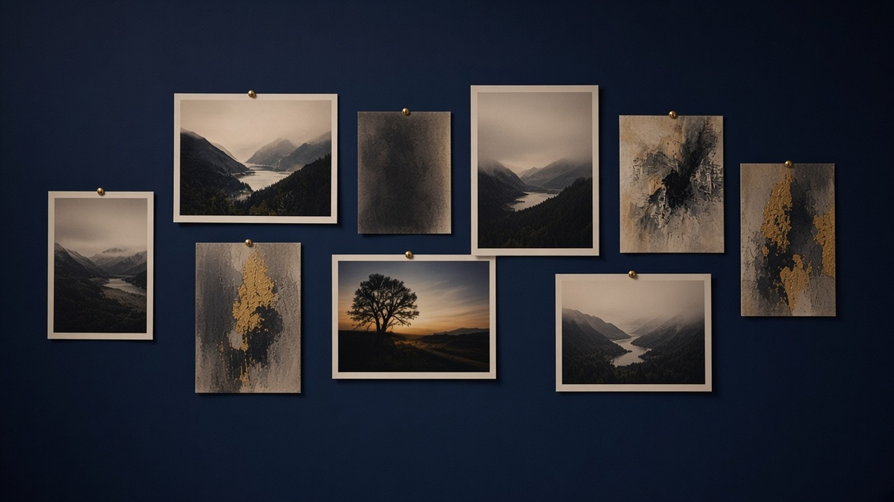
Extend an existing mood
Share three to five of your own images with the tool you're using, ones that already capture a look or feeling you value.
“Using only the lighting, color, and emotional tone present in these reference images, describe three client concepts I could offer. Stay strictly inside this visual language. Do not introduce new styles.”
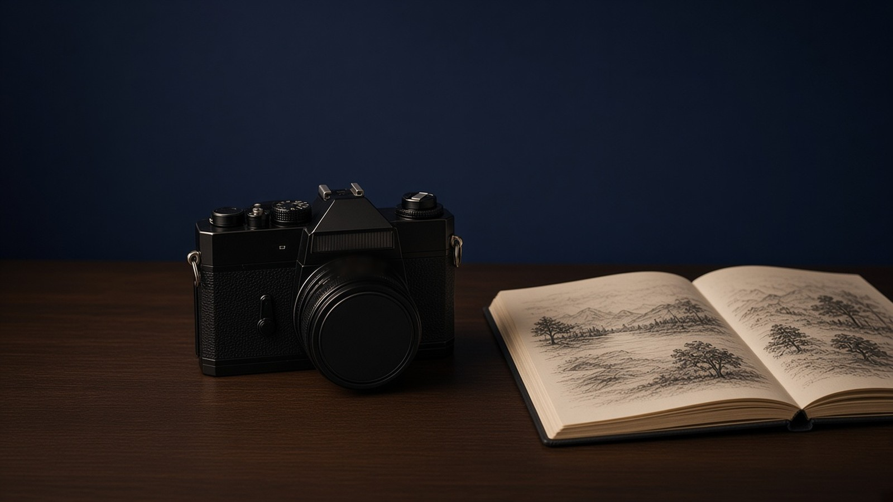
Expand a real brief into a shot list
“Here is a one-sentence client brief: [paste]. From a quiet, natural-light, documentary approach, give me a ten-shot list and a short narrative arc. Flag any suggestion that would require a change in my established style.”
Prepare client variations without reshooting
“This is a finished image of mine. Describe three subtle presentation variations — different crops, minor color-grade shifts, or alternate sequencing — that remain recognizably my work. Explain briefly why each still belongs to the original.”
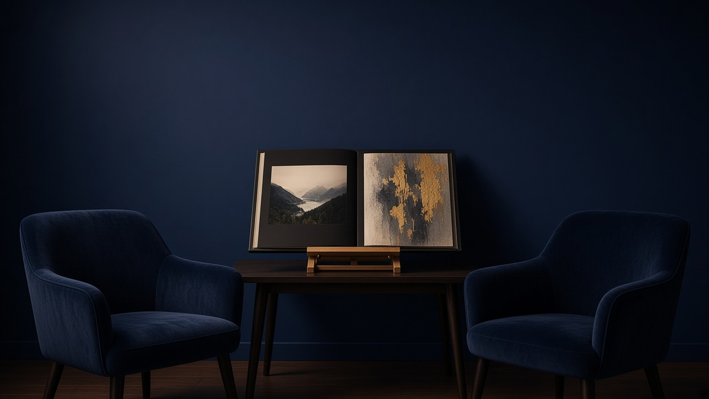
Lighten the surrounding work
“I need three short options for [captions / client email / social post] based on this recent shoot. Keep the tone warm, professional, and close to how I already write. I will edit the final version.”
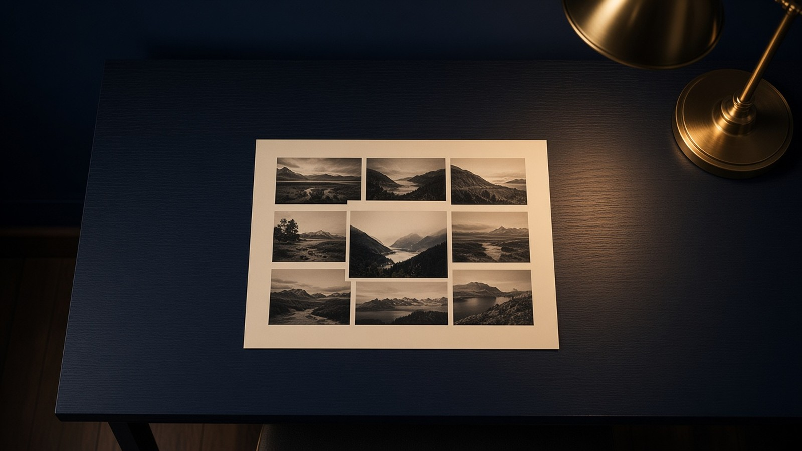
Put your style into words
This short exercise walks through how you shoot: vibe, light, color, subjects, framing, and editing. Then you can add a few favorite photos, and the page will suggest the traits it can see in them. At the end you get a Style Lock: a short definition of your style that you can copy, download, or keep on this device.
Your photos stay with you
Photos are processed only in your browser. Nothing is uploaded, nothing goes to a server, and nothing is stored on our side. Your Style Lock saves only on your own device.
Vibe
What should people feel in front of your work? Pick any that fit.
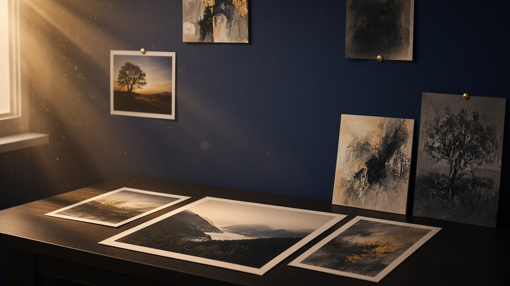
Light
What light do you reach for most?
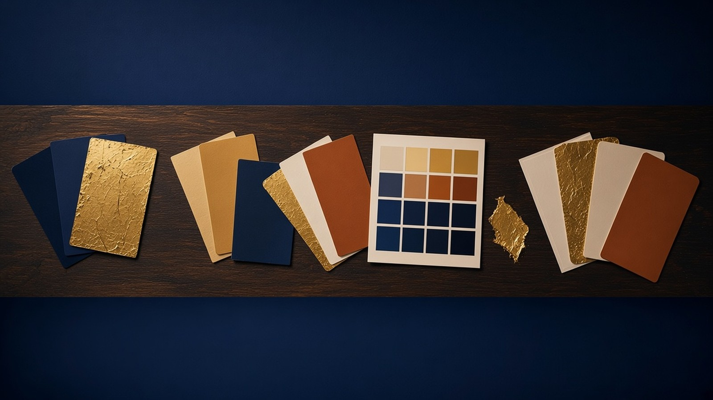
Color
How does color usually sit in your images?
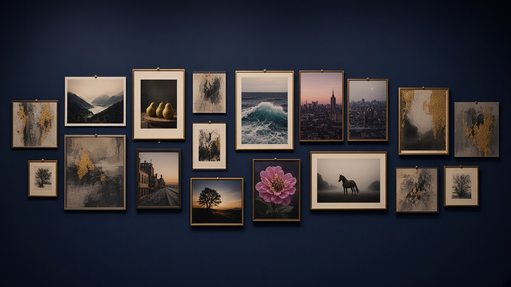
Subjects
What do you photograph most, or most want to?
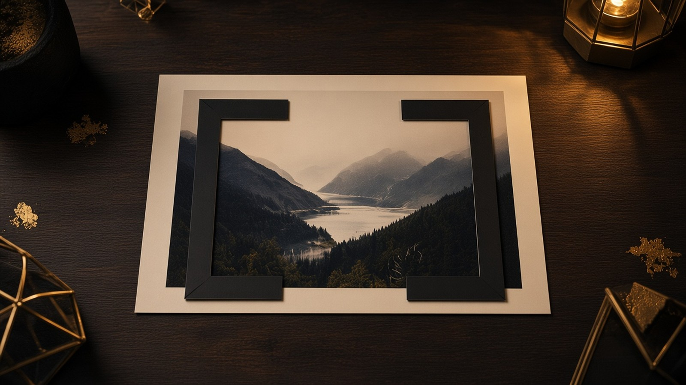
Framing
How do you tend to build a frame?
Editing habits
What usually happens after the shoot?
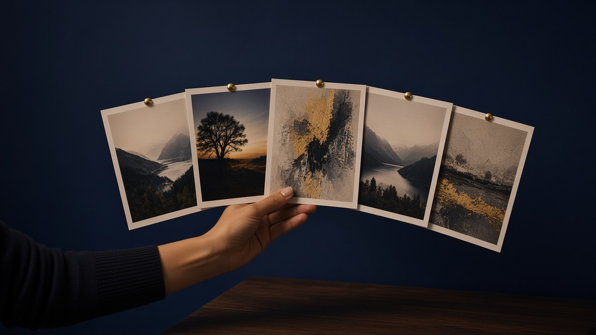
Add a few favorite photos
Choose up to six photos you love. The page reads their pixels to suggest a color palette, warm or cool, bright or moody, and contrast. These are suggestions. You decide what fits.
Processed only in your browser
Nothing is uploaded, nothing goes to a server, and nothing is stored on our side.
Drag photos here, or
What the page sees
- Temperature
- Brightness
- Contrast
- Color strength
Your Style Lock
Here is your style in one place. Edit the definition until it sounds like you, then copy it, download it, or keep it on this device.
Style Lock
Your Style Lock saves only on your own device, in this browser. Photos are never uploaded and nothing is stored on our side. Clear removes the saved Style Lock and your answers from this device.
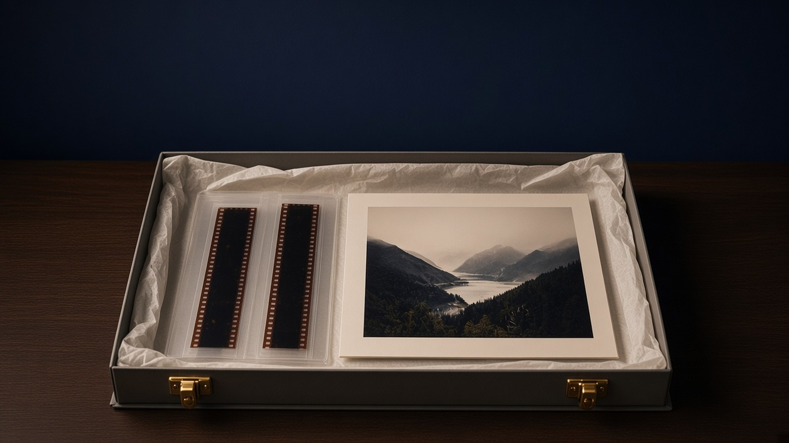
Guardrails that protect the work
- Begin with your own images or real client material whenever possible.
- Ask the tool to distinguish between extending what is already present and inventing something new.
- Color, sequence, selection, and delivery remain yours.
- If a suggestion does not feel like your work, discard it. That decision is part of the craft.
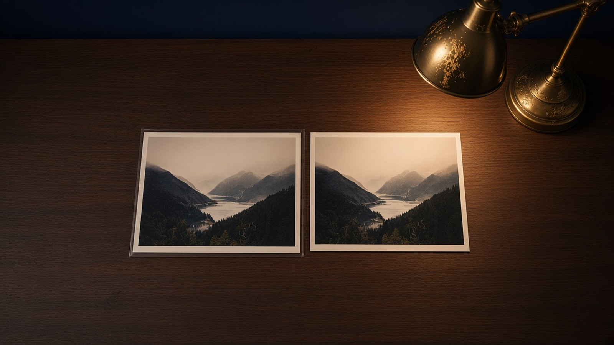
Work on a copy
Keep your original untouched.
Before any tool touches a file, duplicate it. Keep the original in its own folder and give the working copy a name you can tell apart at a glance.
If a result goes wrong, nothing is lost. You can always return to the image exactly as you made it.
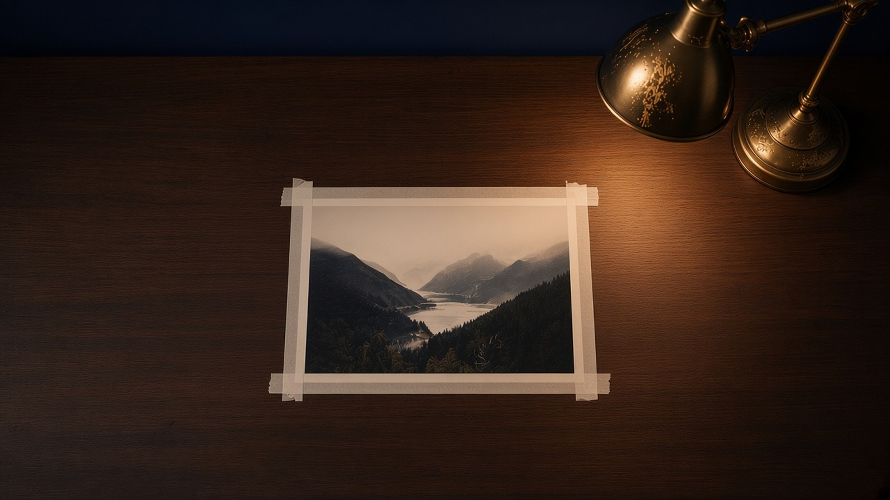
Say what must not change
Limits make the output sound and look more like you.
Tell the tool what it may not touch as clearly as what you want: “Keep the skin tones as they are.” “Do not add objects.” “Stay inside these colors.”
The clearer the boundaries, the less you have to undo, and the closer the suggestions stay to your own style.
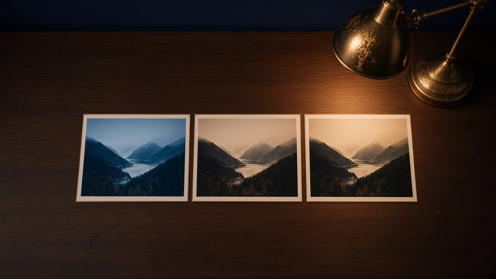
Ask for options, then choose
Choosing is a skill you already have.
Ask for three to five options instead of a single answer. Comparing them shows you quickly what the tool understood and what it missed.
Keep what fits, discard the rest, and ask again with what you learned.
Keep a prompt notebook
Turn what works into something you can repeat.
When a prompt gives you something useful, save it with a short note: what it was for, and what you changed afterward.
Over time those notes become your own starter set, written in your voice and ready for the next project.
Protect client trust
Ask before client material goes into a tool.
Before you put client images, names, or briefs into an online tool, read how that tool stores and uses what you give it. When in doubt, ask the client first.
Leave out names, locations, and details the task does not need.
Review everything before it leaves
Your name is on the final version.
Read every caption, email, and description a tool drafts as if a stranger wrote it. Check names, dates, and facts against your own records.
If a tool added or invented something visible in a finished image, say so to the client. The research notes at the end point to published ways to label it.
What becomes possible
- Faster testing of ideas so more time stays on the shoot or the edit.
- Clearer client conversations before equipment is unpacked.
- New formats (lookbooks, short sequences, series) that can be explored without large upfront investment.
- More of the distinctive work clients already hire you for, produced with less surrounding friction.
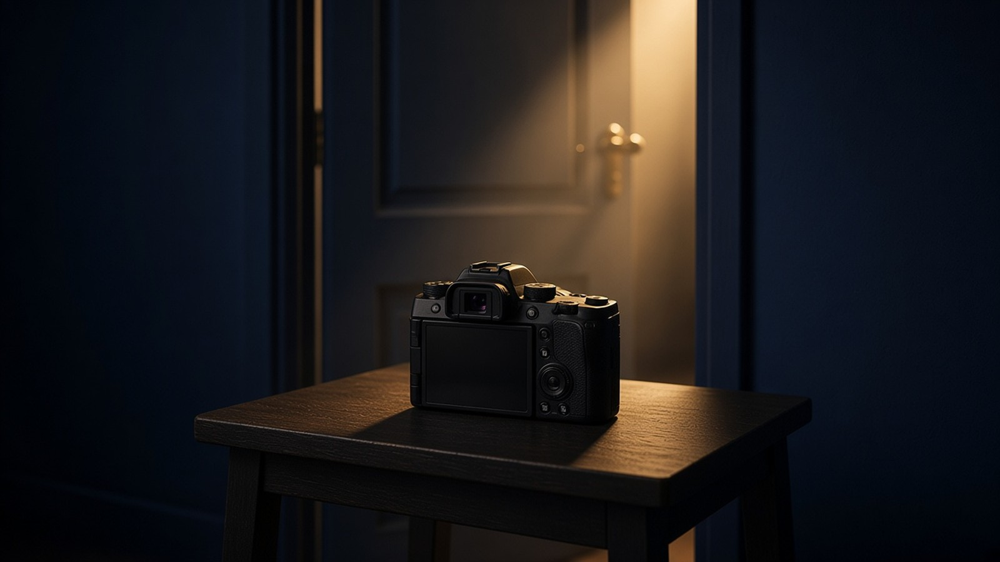
Choose one of the four starting points and apply it to a real project or a personal image you already trust.
Notice what is useful and what is not. That noticing is how you keep authority over the process.
The camera, the software, and now the model are instruments.
The vision remains yours.
That is what the tools exist to serve.
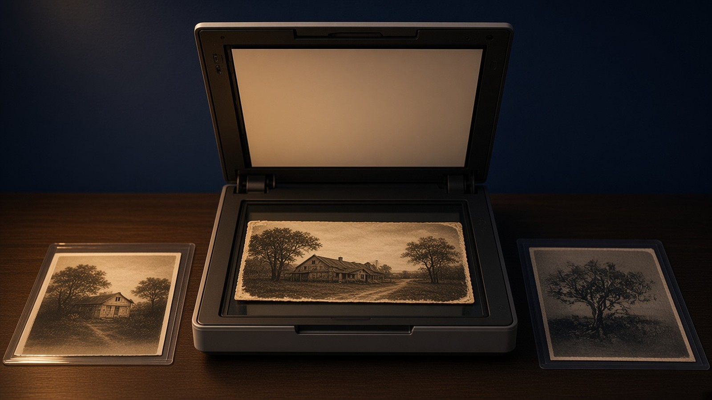
Research notes
Research notes: restoring photographs
These notes are background for artists who work with photographs. They are not part of the guide. Each claim is linked to a published source.
Keep a master. Work on a copy.
The Federal Agencies Digital Guidelines Initiative (FADGI) does not allow dust removal, color or tone enhancement, or restoration on master images. Access versions may be adjusted and should be noted in embedded metadata and in the file name.
The Library of Congress recommended formats for digital photographs prefer the highest bit depth available, 16 bits per channel if available, an embedded color profile, and uncompressed or lossless files, including TIFF, JPEG 2000, PNG, and DNG.
For photographic prints, FADGI four-star capture calls for at least 594 ppi, 16-bit files, and a mean ΔE2000 under 2. Three-star capture calls for at least 392 ppi and a mean ΔE2000 under 3.5. At or above three-star, master files from photographs are to be 16-bit.
A related European guideline is the Metamorfoze Preservation Imaging Guidelines.
Label what a tool invents.
The IPTC Digital Source Type vocabulary distinguishes, among other values, human edits, algorithmic enhancement without changing the main content, composites that use generative tools such as inpainting, and fully generated media.
- Source: IPTC Digital Source Type
Content Credentials, based on the C2PA specification, can attach a tamper-evident history of actions to a file.
- Source: Content Credentials
- Source: C2PA Technical Specification 2.2
The American Institute for Conservation Code of Ethics and Guidelines for Practice states that any intervention to compensate for loss should be documented, detectable by common examination methods, and reversible, and should not falsely modify the known aesthetic, conceptual, and physical characteristics, especially by removing or obscuring original material.
Open models, with papers and licenses.
These models appear in published papers. The license named for each one is taken from the project's public license file.
- LaMa — large-mask inpainting for tears and missing areas. Paper. License (Apache 2.0).
- Restormer — high-resolution denoising and deblurring. Paper. License (MIT).
- DDColor — colorization of black-and-white images. Paper. License (Apache 2.0).
- Real-ESRGAN — upscaling. Paper. License (BSD-3-Clause).
- RestoreFormer++ — face restoration. Paper. License (Apache 2.0).
- CodeFormer — face restoration. License: S-Lab 1.0, for non-commercial use unless permission is granted. Paper. License.
- GFPGAN — face restoration. License: Apache 2.0 except third-party components that include non-commercial terms. Paper. License.
A prompt you can copy
If you want to try a tool on a scan of a photograph you already have, this prompt keeps the work on what is visible and asks the tool to flag anything it would invent.
“This is a scan of a photograph I already have. Work only from what is visible in this file. Suggest a careful cleanup of dust, scratches, or faded tone. Do not invent faces, backgrounds, or colors that are not in the original. Flag any suggestion that would fill missing areas with inferred detail, so I can decide whether to keep it or discard it.”
These notes are a short reference, not legal advice and not a full technical manual.